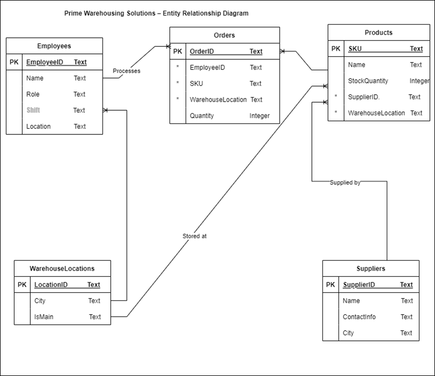
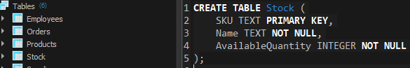
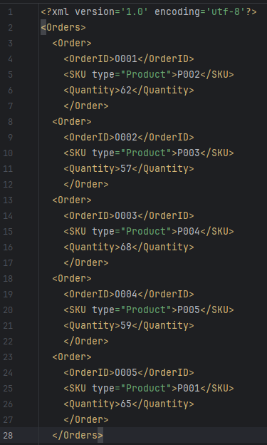
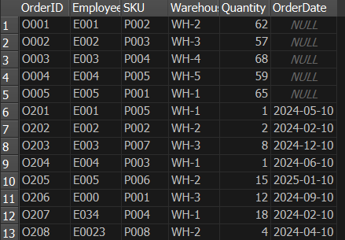

Overview
This project started from a warehouse operations scenario and aimed to build a small working system with schema design, local application tooling, and data-handling features in one build.
What Was Built
- A relational SQLite database covering employees, orders, products, suppliers, warehouse locations, login details, stock, and employee photos.
- A Tkinter login workflow with SHA-256 password hashing and credential validation against the database.
- An employee management interface for adding staff records through a GUI.
- An XML export module that extracted order records into a structured
orders.xmlfile. - BLOB storage and retrieval for employee photos inside the database.
- A multi-threaded order insertion script that split order inserts into two concurrent batches.
Technical Evidence
- The included database contains 8 non-system tables:
EmployeePhotos,Employees,LoginDetails,Orders,Products,Stock,Suppliers, andWarehouseLocations. - The database currently holds 10 employees, 13 orders, 5 products, 5 suppliers, 5 warehouse locations, 1 login record, and 1 stored employee photo.
- The codebase includes separate modules for GUI login, employee insertion, password hashing, XML export, BLOB retrieval, and threaded inserts.
- The schema design and ERD clearly reflect a warehouse workflow with entity separation across employees, products, suppliers, orders, and locations.
Business Value
The system supports routine warehouse needs such as stock visibility, supplier tracking, employee assignment, and order processing. What makes it useful on a portfolio is the mix of pieces working together: database design, application logic, and data exchange in one project.




Key Metrics
Portfolio Summary
This page brings together the schema, the local database, the GUI flow, the hashed login check, XML export, image storage, and concurrent inserts in one project.
The strongest evidence in the submission sits around the schema, GUI, XML, BLOB, and threading work, so that is where the page keeps its focus.